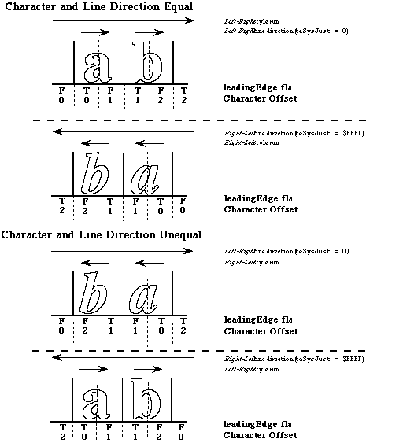

Introduction
The leftSide flag in the Pixel2Char routine was
inappropriately named, and it should now be called the leadingEdge
flag. The reason for this change is that the value Pixel2Char returns
indicates whether a mouse-down occurred on the leading edge of a character,
which is not always the left side. (In Arabic or Hebrew, both of which are
right-to-left scripts, the mouse-down occurs on the right side of the
character.)
With this change, the interfaces also change. Following are both the old and
new definitions in Pascal and C respectively:
Old Definition
FUNCTION Pixel2Char(textBuf: Ptr;textLen: INTEGER;slop: INTEGER;pixelWidth: INTEGER;
VAR leftSide: BOOLEAN): INTEGER;
pascal short Pixel2Char(Ptr textBuf,short textLen,short slop,short pixelWidth,
|
New Definition
FUNCTION Pixel2Char(textBuf: Ptr;textLen: INTEGER;slop: INTEGER;pixelWidth: INTEGER;
VAR leadingEdge: BOOLEAN): INTEGER;
pascal short Pixel2Char(Ptr textBuf,short textLen,short slop,short pixelWidth,
|
The value of the leadingEdge flag is True if a mouse-down
occurs on the leading edge of the character in its direction (e.g., the left
side for a left-to-right script (Roman) and the right side for a right-to-left
one (Arabic or Hebrew)). Figure 1 illustrates these differences.
This Note describes the way script systems should work; however, in some
systems, the values of leadingEdge and character offset are undefined
when the pixelWidth is outside the boundaries of the text.
You define the start of a right-to-left line to be on the right and the end to
be on the left; therefore, it follows that the start of a left-to-right line is
on the left, while the end is on the right. The values at the start of
a line should be False for leadingEdge and zero for character
offset. The values at the end are True for
leadingEdge and the character offset is the total byte count of that
line. You should check for these out-of-bounds conditions explicitly and
perform the appropriate actions. This change will appear in the next version
of the Script Manager documentation.

Figure 1. Pixel2Char leadingEdge Flag
Back to top
Downloadables
|

|
Acrobat version of this Note (184K).
|
Download
|
|